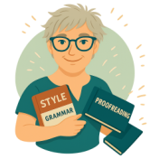

Individual Support & Recovery Coaching
Supporting people to move toward meaningful life goals through recovery-oriented, person-centred coaching

Recovery coaching, behaviour support, case management and system navigation that centre participant goals, choice and dignity.
Forethought combines clinical governance, lived experience and trauma‑aware practice to help NDIS participants move from uncertainty to capability, with practical, measurable progress.
A quick overview of our core supports.
For NDIS-style support, disability support, and life-goal coaching.
Learn moreFor small businesses, sole traders, and community organisations needing help with systems, documents, and workflow.
Learn moreFor induction modules, ethics/integrity training, and professionial development.
Learn moreFor researchers needing help with HREC submissions, governance documents, consumer consultation, and GCP-aligned processess.
Learn moreA strengths‑based framework for mapping participant journeys.

Principal — Registered Nurse, Ethics & Governance Specialist
View bio
Director — Operations and Business Systems
View bio
Add — Add
View bioAdd — Add
View bio
Add — Add
View bio
Add — Add
View bio